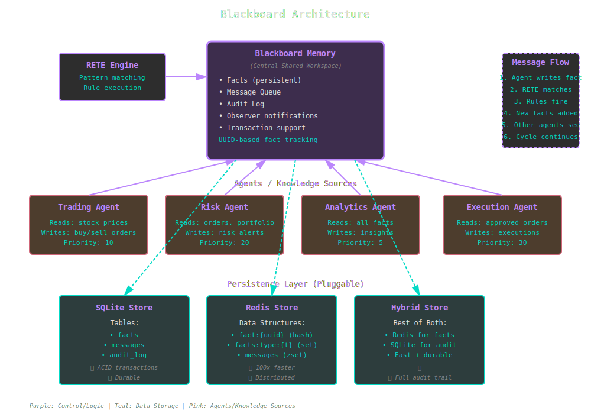

Blackboard Memory¶
The blackboard pattern enables multiple agents to collaborate through a shared persistent workspace. This guide covers using KBS's blackboard memory for multi-agent systems, audit trails, and persistent knowledge bases.
What is Blackboard Memory?¶
The blackboard architecture consists of three components:
- Blackboard (
KBS::Blackboard::Memory) - Central shared workspace - Knowledge Sources (Agents) - Independent specialists that read/write facts
- Control (Rules + Priority) - Determines which agent acts when

KBS uses the blackboard pattern for persistent, multi-agent reasoning with complete audit trails.
Basic Usage¶
Creating a Blackboard Engine¶
require 'kbs'
# With SQLite (default)
engine = KBS::Blackboard::Engine.new(db_path: 'kb.db')
kb = KBS.knowledge_base(engine: engine) do
# Facts persist across restarts
fact :sensor, id: "bedroom", temp: 28
end
kb.close
# Next run
engine = KBS::Blackboard::Engine.new(db_path: 'kb.db')
kb = KBS.knowledge_base(engine: engine)
puts kb.engine.facts.size # => 1
Blackboard vs Regular Engine¶
# Regular engine (transient)
kb_regular = KBS.knowledge_base do
fact :foo, bar: 1
end
# Lost on exit
# Blackboard engine (persistent)
engine = KBS::Blackboard::Engine.new(db_path: 'kb.db')
kb_blackboard = KBS.knowledge_base(engine: engine) do
fact :foo, bar: 1
end
kb_blackboard.close
# Persisted to database
Persistent Facts¶
Fact Lifecycle¶
engine = KBS::Blackboard::Engine.new(db_path: 'kb.db')
# Create fact
fact = engine.add_fact(:sensor, id: "bedroom", temp: 28)
# Fact has UUID
puts fact.id # => "550e8400-e29b-41d4-a716-446655440000"
# Update fact
engine.update_fact(fact.id, temp: 30)
# Query fact history
history = engine.fact_history(fact.id)
history.each do |entry|
puts "#{entry[:timestamp]}: #{entry[:operation]} - #{entry[:attributes]}"
end
# Delete fact
engine.delete_fact(fact.id)
Fact Attributes¶
Blackboard facts support the same interface as regular facts:
engine = KBS::Blackboard::Engine.new(db_path: 'kb.db')
fact = engine.add_fact(:stock, symbol: "AAPL", price: 150)
# Access
fact.type # => :stock
fact[:symbol] # => "AAPL"
fact.attributes # => { symbol: "AAPL", price: 150 }
fact.id # => UUID string
# Metadata
fact.created_at # => Time object
fact.updated_at # => Time object
Message Queue¶
The blackboard includes a priority-based message queue for agent communication:
Sending Messages¶
engine = KBS::Blackboard::Engine.new(db_path: 'kb.db')
# Add message to queue
engine.send_message(:alerts, "High temperature detected", priority: 10)
engine.send_message(:alerts, "Critical failure", priority: 100) # Higher priority
Receiving Messages¶
# Pop highest priority message
msg = engine.pop_message(:alerts)
puts msg[:content] # => "Critical failure"
puts msg[:priority] # => 100
# Process all messages
while (msg = engine.pop_message(:alerts))
process_alert(msg[:content])
end
Message Topics¶
Organize messages by topic:
# Different topics for different concerns
engine.send_message(:sensor_alerts, "Temp spike", priority: 50)
engine.send_message(:system_events, "Startup complete", priority: 10)
engine.send_message(:user_notifications, "Welcome!", priority: 1)
# Agents process their own topics
sensor_agent_msg = engine.pop_message(:sensor_alerts)
system_msg = engine.pop_message(:system_events)
user_msg = engine.pop_message(:user_notifications)
Audit Trail¶
Blackboard automatically logs all changes:
Fact Audit Log¶
engine = KBS::Blackboard::Engine.new(db_path: 'kb.db')
# Add fact
fact = engine.add_fact(:order, id: 1, status: "pending")
# Update fact
engine.update_fact(fact.id, status: "processing")
# Delete fact
engine.delete_fact(fact.id)
# Query audit trail
history = engine.fact_history(fact.id)
history.each do |entry|
puts "#{entry[:timestamp]}: #{entry[:operation]}"
puts " Attributes: #{entry[:attributes]}"
end
# Output:
# 2025-01-15 10:00:00: add
# Attributes: {id: 1, status: "pending"}
# 2025-01-15 10:01:00: update
# Attributes: {id: 1, status: "processing"}
# 2025-01-15 10:02:00: delete
# Attributes: {id: 1, status: "processing"}
Rule Firing Log¶
# Enable rule firing audit
engine = KBS::Blackboard::Engine.new(
db_path: 'kb.db',
audit_rules: true
)
kb = KBS.knowledge_base(engine: engine) do
rule "my_rule" do
on :trigger, {}
perform { }
end
fact :trigger, {}
run
end
# Query rule firings
firings = engine.rule_firings(rule_name: "my_rule")
firings.each do |firing|
puts "Rule '#{firing[:rule_name]}' fired at #{firing[:timestamp]}"
puts " Facts: #{firing[:fact_ids]}"
puts " Bindings: #{firing[:bindings]}"
end
Multi-Agent Systems¶
Agent Pattern¶
class Agent
def initialize(name, engine)
@name = name
@engine = engine
end
def observe
# Read facts from blackboard
@engine.facts.select { |f| relevant?(f) }
end
def decide(observations)
# Apply agent's expertise
# Return action or nil
end
def act(action)
# Write facts to blackboard
# Send messages to other agents
end
def run
observations = observe
action = decide(observations)
act(action) if action
end
end
Example: Trading System¶
class MarketDataAgent < Agent
def run
# Fetch market data
data = fetch_market_data()
# Post to blackboard
@engine.add_fact(:market_data, {
symbol: data[:symbol],
price: data[:price],
volume: data[:volume],
timestamp: Time.now
})
end
end
class TradingAgent < Agent
def run
# Observe market data
market_facts = @engine.facts.select { |f| f.type == :market_data }
market_facts.each do |fact|
# Apply trading strategy
if buy_signal?(fact)
@engine.add_fact(:order, {
symbol: fact[:symbol],
type: "buy",
quantity: calculate_quantity(fact),
price: fact[:price]
})
@engine.send_message(:execution, "New buy order", priority: 50)
end
end
end
def buy_signal?(fact)
# Agent's expertise
fact[:price] < moving_average(fact[:symbol]) * 0.95
end
end
class ExecutionAgent < Agent
def run
# Check for execution messages
while (msg = @engine.pop_message(:execution))
# Find pending orders
orders = @engine.facts.select { |f|
f.type == :order && !f[:executed]
}
orders.each do |order|
execute_order(order)
# Update fact
@engine.update_fact(order.id, executed: true)
# Notify
@engine.send_message(:notifications, "Order executed", priority: 10)
end
end
end
end
# Run agents in loop
engine = KBS::Blackboard::Engine.new(db_path: 'trading.db')
market_agent = MarketDataAgent.new("Market", engine)
trading_agent = TradingAgent.new("Trading", engine)
execution_agent = ExecutionAgent.new("Execution", engine)
loop do
market_agent.run # Fetch data blackboard
trading_agent.run # Analyze create orders
execution_agent.run # Execute orders
sleep 1
end
Transactions¶
Blackboard supports ACID transactions (SQLite backend):
engine = KBS::Blackboard::Engine.new(db_path: 'kb.db')
# Transaction succeeds
engine.transaction do
engine.add_fact(:account, id: 1, balance: 1000)
engine.add_fact(:account, id: 2, balance: 500)
end
# Both facts committed
# Transaction fails
begin
engine.transaction do
engine.add_fact(:account, id: 3, balance: 100)
raise "Error!"
engine.add_fact(:account, id: 4, balance: 200) # Never reached
end
rescue => e
puts "Transaction rolled back"
end
# No facts committed
Observers¶
Monitor blackboard changes in real-time:
class FactObserver
def update(operation, fact)
case operation
when :add
puts "Fact added: #{fact.type} - #{fact.attributes}"
when :remove
puts "Fact removed: #{fact.type} - #{fact.attributes}"
when :update
puts "Fact updated: #{fact.type} - #{fact.attributes}"
end
end
end
engine = KBS::Blackboard::Engine.new(db_path: 'kb.db')
observer = FactObserver.new
engine.memory.add_observer(observer)
engine.add_fact(:sensor, temp: 28)
# Output: Fact added: sensor - {:temp=>28}
Performance Tuning¶
SQLite Optimization¶
engine = KBS::Blackboard::Engine.new(
db_path: 'kb.db',
journal_mode: 'WAL', # Write-Ahead Logging
synchronous: 'NORMAL', # Balance durability/speed
cache_size: -64000, # 64MB cache
busy_timeout: 5000 # Wait 5s for locks
)
Redis for Speed¶
require 'kbs/blackboard/persistence/redis_store'
store = KBS::Blackboard::Persistence::RedisStore.new(
url: 'redis://localhost:6379/0'
)
engine = KBS::Blackboard::Engine.new(store: store)
# 10-100x faster than SQLite
# Perfect for high-frequency updates
Hybrid for Production¶
require 'kbs/blackboard/persistence/hybrid_store'
store = KBS::Blackboard::Persistence::HybridStore.new(
redis_url: 'redis://localhost:6379/0',
db_path: 'audit.db'
)
engine = KBS::Blackboard::Engine.new(store: store)
# Fast access (Redis) + durable audit (SQLite)
Best Practices¶
1. Use UUIDs for Fact References¶
# Good: Store fact UUID
order_id = engine.add_fact(:order, { ... }).id
engine.add_fact(:payment, order_id: order_id)
# Bad: Use attribute as reference
engine.add_fact(:order, id: 1)
engine.add_fact(:payment, order_id: 1) # Fragile
2. Namespace Facts by Agent¶
# Good: Clear ownership
engine.add_fact(:market_agent_data, { ... })
engine.add_fact(:trading_agent_signal, { ... })
# Bad: Generic names
engine.add_fact(:data, { ... })
engine.add_fact(:signal, { ... })
3. Use Messages for Coordination¶
# Good: Explicit coordination
engine.send_message(:execution_queue, "Process order #123", priority: 50)
# Bad: Polling facts
loop do
orders = engine.facts.select { |f| f.type == :pending_order }
# Inefficient
end
4. Clean Up Old Facts¶
# Remove stale data
engine = KBS::Blackboard::Engine.new(db_path: 'kb.db')
kb = KBS.knowledge_base(engine: engine) do
rule "cleanup_old_facts", priority: 1 do
on :market_data,
timestamp: :time?,
predicate: lambda { |f|
(Time.now - f[:timestamp]) > 3600 # 1 hour old
}
perform do |facts, bindings|
engine.remove_fact(facts[0])
end
end
end
5. Use Transactions for Multi-Fact Updates¶
engine = KBS::Blackboard::Engine.new(db_path: 'kb.db')
# Good: Atomic updates
engine.transaction do
engine.update_fact(account1_id, balance: new_balance1)
engine.update_fact(account2_id, balance: new_balance2)
end
# Bad: Separate updates (not atomic)
engine.update_fact(account1_id, balance: new_balance1)
engine.update_fact(account2_id, balance: new_balance2)
Common Patterns¶
Leader Election¶
engine = KBS::Blackboard::Engine.new(db_path: 'kb.db')
kb = KBS.knowledge_base(engine: engine) do
# Agent attempts to become leader
rule "become_leader" do
on :agent, name: :name?
without :leader, {}
perform do |facts, bindings|
fact :leader, name: bindings[:name?]
puts "#{bindings[:name?]} is now leader"
end
end
end
Distributed Locking¶
# Acquire lock
def acquire_lock(engine, resource_id, agent_id)
engine.transaction do
lock = engine.facts.find { |f|
f.type == :lock && f[:resource_id] == resource_id
}
if lock.nil?
engine.add_fact(:lock, {
resource_id: resource_id,
owner: agent_id,
acquired_at: Time.now
})
true
else
false
end
end
end
# Release lock
def release_lock(engine, resource_id, agent_id)
lock = engine.facts.find { |f|
f.type == :lock &&
f[:resource_id] == resource_id &&
f[:owner] == agent_id
}
engine.remove_fact(lock) if lock
end
Event Sourcing¶
engine = KBS::Blackboard::Engine.new(db_path: 'kb.db')
# Store events as facts
engine.add_fact(:event, {
type: "order_created",
aggregate_id: "order-123",
data: { item: "Widget", quantity: 5 },
timestamp: Time.now
})
# Reconstruct state from events
def rebuild_order(engine, order_id)
events = engine.facts
.select { |f| f.type == :event && f[:aggregate_id] == order_id }
.sort_by { |f| f[:timestamp] }
state = {}
events.each do |event|
apply_event(state, event)
end
state
end
Next Steps¶
- Persistence - Storage backend options
- Architecture - Blackboard implementation details
- Blackboard Examples - Complete multi-agent and blackboard systems
- API Reference - Complete blackboard API
The blackboard pattern enables emergent intelligence through agent collaboration. Each agent contributes expertise to solve problems no single agent could solve alone.